Candidate List 20260408 Previous Day Next Day Section 1: New Sources (age<1d) Cosmological Afterglow
Section 2: Old (1-5d) sources observed last night placeholder
Section 1: New Afterglow/FBOT Cands Last Night (1)
1. ZTF26aarsdic (Afterglow?) [Back to Top] [Share] [Trigger Swift] [Fritz ] [Lasair ]RA, Dec: 138.92545, 18.47694 9h15m42.11s, 18d28m37.00sGalactic (l, b): 210.88133, 39.90028 WARNING: 2.46 deg from ecliptic plane ext(g-r) = 0.033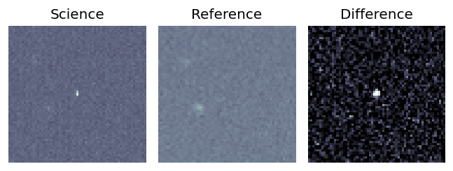
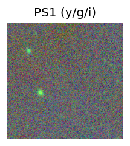
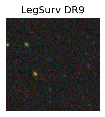
LegacySurvey: 1 sources in 3 arcsec Closest: d = 4.32 arcsec, 33.0 deg (east of north) photoz=0.49 (68% bounds 0.37, 0.65), type=REX peak abs mag = -23.07 (68% bounds -22.41, -23.84) 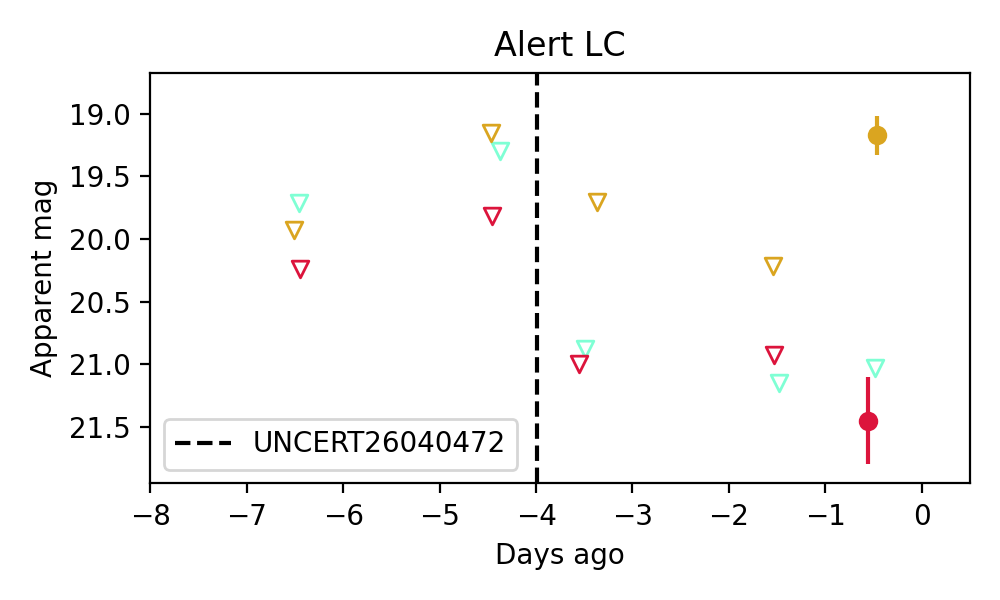
Consistent with synchrotron, g-r>0!
Section 2: Older Sources Observed Last Night (16)
0. ZTF26aaqxhgb (FBOT?) [Back to Top] [Share] [Trigger Swift] [Fritz ] [Lasair ]RA, Dec: 129.6565, 2.06056 8h38m37.56s, 2d 3m38.03sGalactic (l, b): 223.93471, 24.66867 ext(g-r) = 0.052LegacySurvey: 1 sources in 3 arcsec Closest: d = 1.09 arcsec, 61.1 deg (east of north) photoz=0.07 (68% bounds 0.05, 0.1), type=EXP peak abs mag = -19.51 (68% bounds -18.8, -20.2) Consistent with synchrotron, g-r>0!
1. ZTF26aaqxnaq (FBOT?) [Back to Top] [Share] [Trigger Swift] [Fritz ] [Lasair ]RA, Dec: 171.92747, 54.26313 11h27m42.59s, 54d15m47.26sGalactic (l, b): 146.70684, 58.82946 ext(g-r) = 0.015peak abs mag = -27.86 LegacySurvey: 1 sources in 3 arcsec Closest: d = 1.10 arcsec, 23.7 deg (east of north) photoz=0.08 (68% bounds 0.03, 0.15), type=EXP peak abs mag = -20.1 (68% bounds -17.88, -21.67)
2. ZTF26aaqxzrf (Afterglow?) [Back to Top] [Share] [Trigger Swift] [Fritz ] [Lasair ]RA, Dec: 244.1501, 44.87508 16h16m36.02s, 44d52m30.30sGalactic (l, b): 70.53301, 45.73659 ext(g-r) = 0.011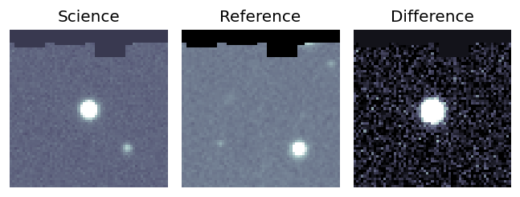
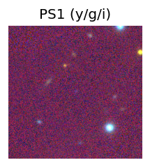
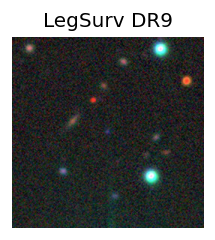
LegacySurvey: 1 sources in 3 arcsec Closest: d = 0.14 arcsec, 41.1 deg (east of north) photoz=0.87 (68% bounds 0.08, 1.4), type=PSF peak abs mag = -29.78 (68% bounds -23.78, -31.05) 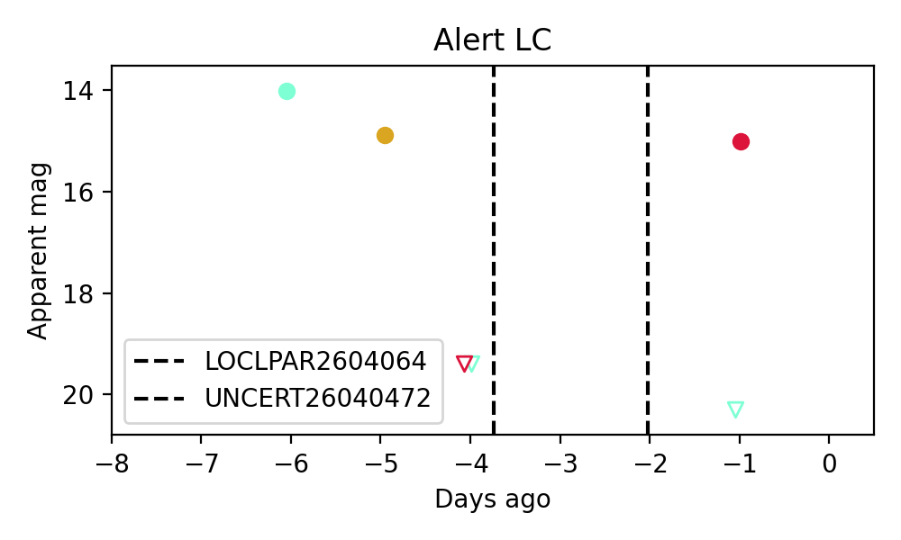
3. ZTF26aarbnwe (FBOT?) [Back to Top] [Share] [Trigger Swift] [Fritz ] [Lasair ]RA, Dec: 251.51025, 30.92826 16h46m2.46s, 30d55m41.74sGalactic (l, b): 52.04918, 39.16401 ext(g-r) = 0.033peak abs mag = -23.90 LegacySurvey: 1 sources in 3 arcsec Closest: d = 0.69 arcsec, 326.0 deg (east of north) photoz=1.02 (68% bounds 0.75, 1.22), type=REX peak abs mag = -24.93 (68% bounds -24.11, -25.42)
4. ZTF26aarcbcv (FBOT?) [Back to Top] [Share] [Trigger Swift] [Fritz ] [Lasair ]RA, Dec: 145.0041, -4.6768 9h40m0.98s, -4d-40m-36.50sGalactic (l, b): 239.99234, 33.91889 ext(g-r) = 0.052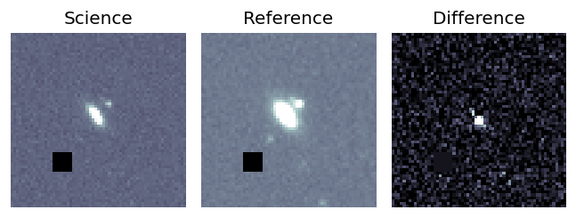
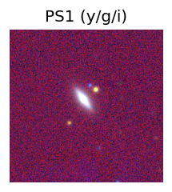
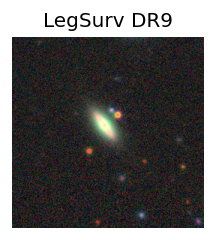
LegacySurvey: 1 sources in 3 arcsec Closest: d = 2.78 arcsec, 27.1 deg (east of north) photoz=0.07 (68% bounds 0.05, 0.08), type=SER peak abs mag = -19.09 (68% bounds -18.34, -19.6) 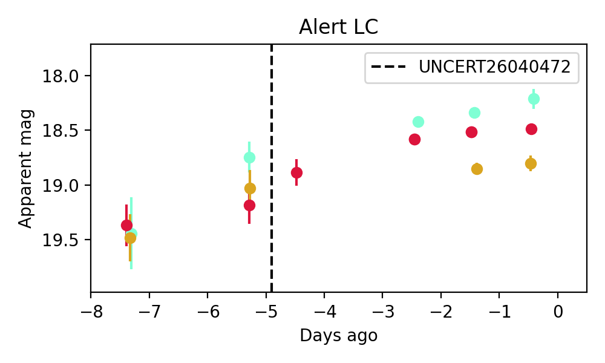
Consistent with synchrotron, g-r>0!
5. ZTF26aardniy (FBOT?) [Back to Top] [Share] [Trigger Swift] [Fritz ] [Lasair ]RA, Dec: 164.34836, 13.97245 10h57m23.61s, 13d58m20.81sGalactic (l, b): 233.51335, 60.34432 ext(g-r) = 0.021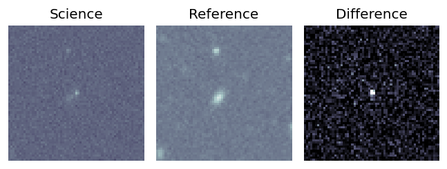
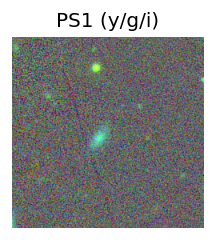
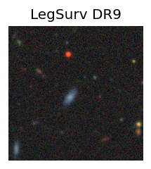
LegacySurvey: 1 sources in 3 arcsec Closest: d = 0.75 arcsec, 27.5 deg (east of north) photoz=0.66 (68% bounds 0.27, 1.46), type=EXP peak abs mag = -23.91 (68% bounds -21.62, -26.04) 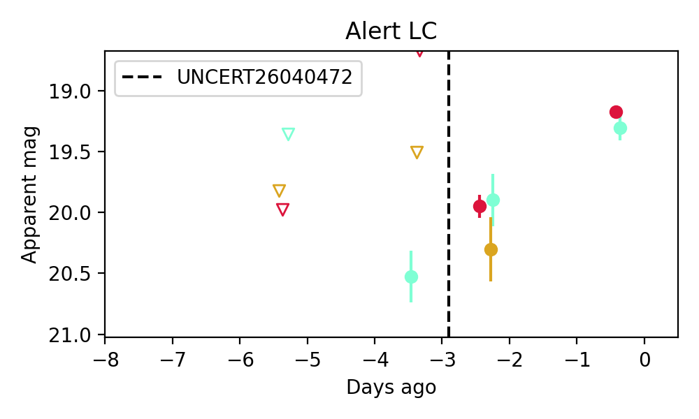
Consistent with synchrotron, g-r>0!
6. ZTF26aargfsy (Afterglow?) [Back to Top] [Share] [Trigger Swift] [Fritz ] [Lasair ]RA, Dec: 180.73274, -6.77426 12h 2m55.86s, -6d-46m-27.35sGalactic (l, b): 282.08029, 54.12199 ext(g-r) = 0.036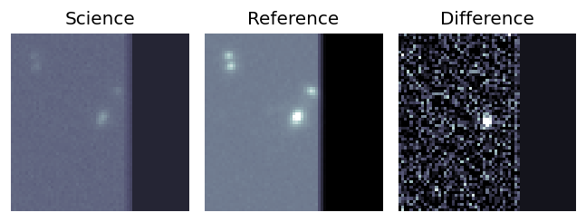
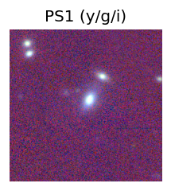
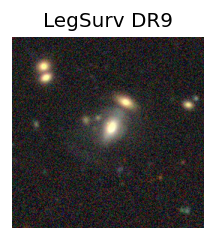
LegacySurvey: 1 sources in 3 arcsec Closest: d = 2.11 arcsec, 318.6 deg (east of north) photoz=0.1 (68% bounds 0.08, 0.12), type=SER peak abs mag = -19.95 (68% bounds -19.34, -20.37) 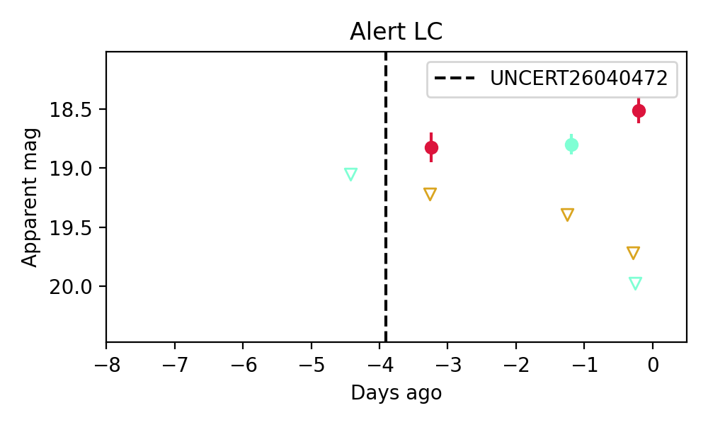
7. ZTF26aarjkei (FBOT?) [Back to Top] [Share] [Trigger Swift] [Fritz ] [Lasair ]RA, Dec: 148.36461, 16.03061 9h53m27.51s, 16d 1m50.19sGalactic (l, b): 218.59882, 47.39808 WARNING: 3.03 deg from ecliptic plane ext(g-r) = 0.039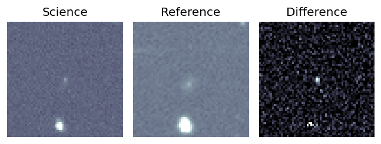
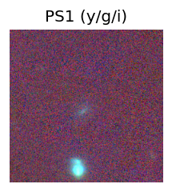
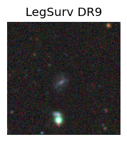
LegacySurvey: 1 sources in 3 arcsec Closest: d = 1.31 arcsec, 40.0 deg (east of north) photoz=0.52 (68% bounds 0.34, 1.03), type=REX peak abs mag = -22.71 (68% bounds -21.58, -24.51) 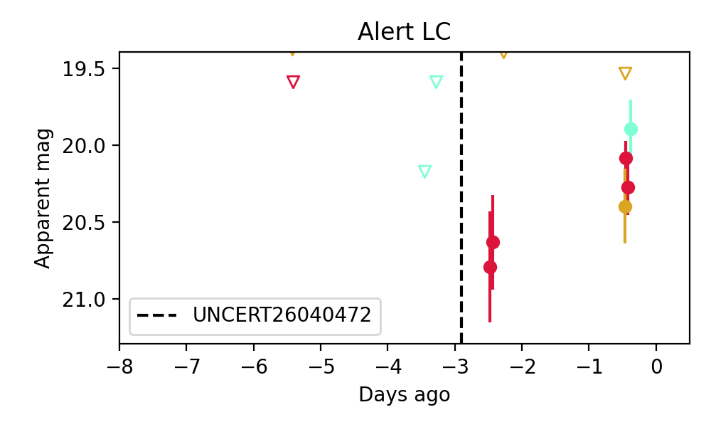
8. ZTF26aarjkso (Afterglow?FBOT?) [Back to Top] [Share] [Trigger Swift] [Fritz ] [Lasair ]RA, Dec: 126.05861, 0.69325 8h24m14.07s, 0d41m35.71sGalactic (l, b): 223.34168, 20.85981 ext(g-r) = 0.04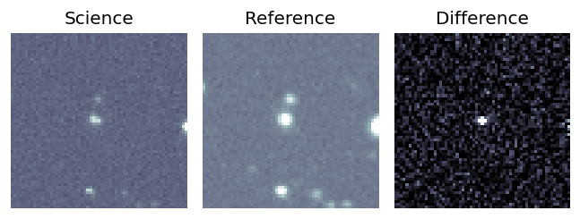
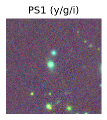
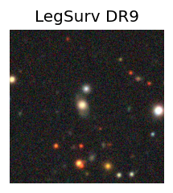
LegacySurvey: 1 sources in 3 arcsec Closest: d = 2.10 arcsec, 76.3 deg (east of north) photoz=0.16 (68% bounds 0.13, 0.18), type=SER peak abs mag = -20.45 (68% bounds -20.01, -20.75) 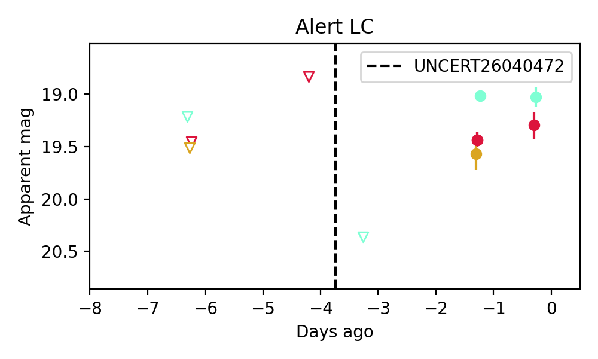
Consistent with synchrotron, g-r>0!
9. ZTF26aarkxlf (Afterglow?) [Back to Top] [Share] [Trigger Swift] [Fritz ] [Lasair ]RA, Dec: 139.65802, 14.78829 9h18m37.93s, 14d47m17.84sGalactic (l, b): 215.66214, 39.18571 WARNING: -0.85 deg from ecliptic plane ext(g-r) = 0.033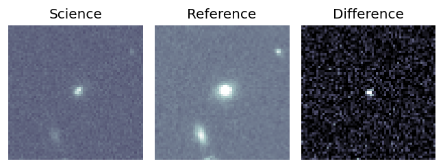
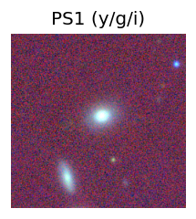
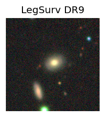
LegacySurvey: 1 sources in 3 arcsec Closest: d = 1.76 arcsec, 318.5 deg (east of north) photoz=0.13 (68% bounds 0.13, 0.14), type=SER peak abs mag = -19.43 (68% bounds -19.29, -19.54) 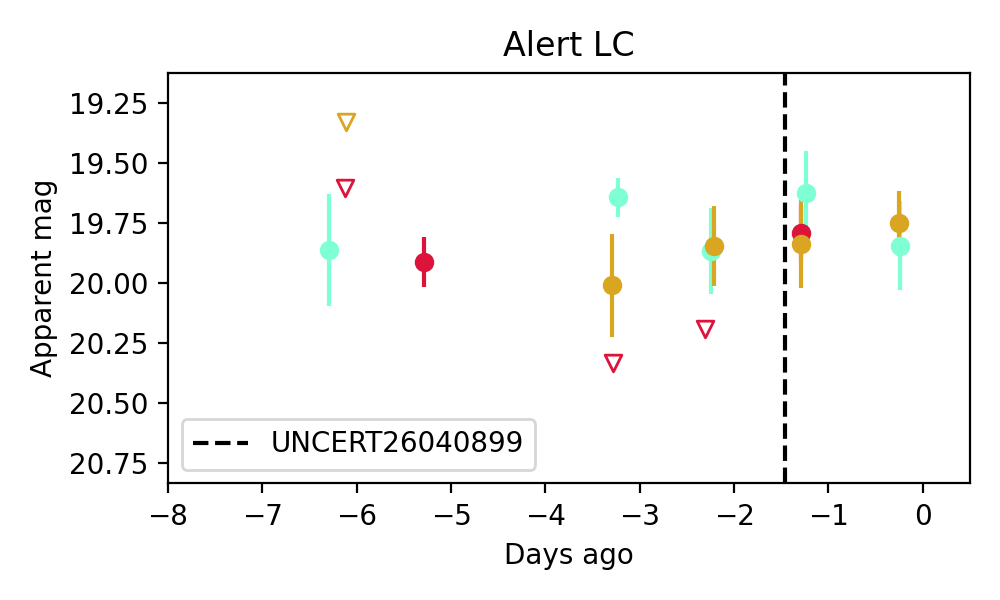
10. ZTF26aarmscq (FBOT?) [Back to Top] [Share] [Trigger Swift] [Fritz ] [Lasair ]RA, Dec: 209.52737, 28.37447 13h58m6.57s, 28d22m28.11sGalactic (l, b): 41.62946, 75.2086 ext(g-r) = 0.019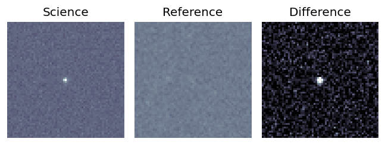
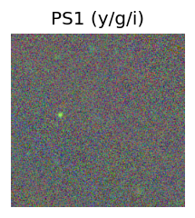
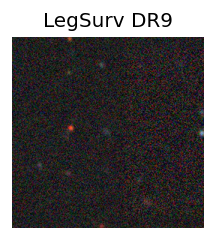
LegacySurvey: 1 sources in 3 arcsec Closest: d = 0.62 arcsec, 78.9 deg (east of north) photoz=0.56 (68% bounds 0.27, 0.91), type=REX peak abs mag = -24.0 (68% bounds -22.16, -25.3) 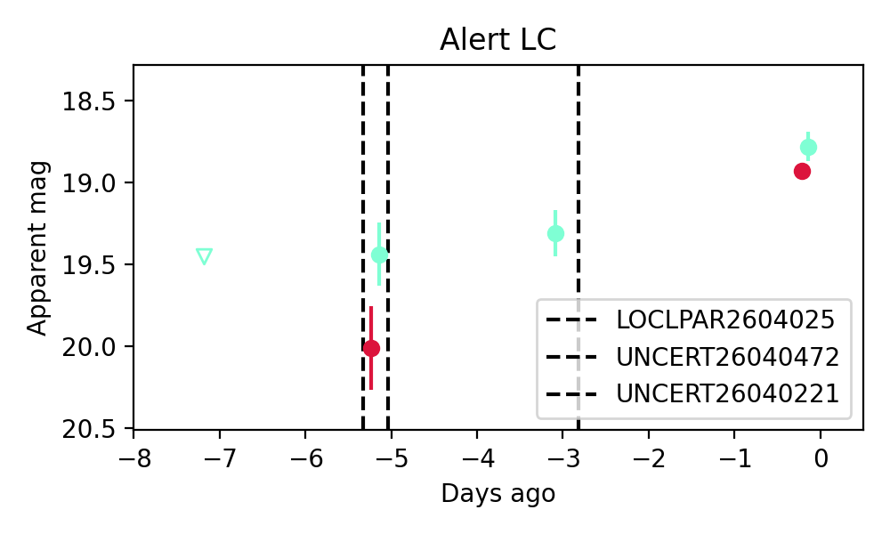
11. ZTF26aarovpx (FBOT?) [Back to Top] [Share] [Trigger Swift] [Fritz ] [Lasair ]RA, Dec: 239.23606, 27.15048 15h56m56.65s, 27d 9m1.74sGalactic (l, b): 44.01729, 48.97624 ext(g-r) = 0.043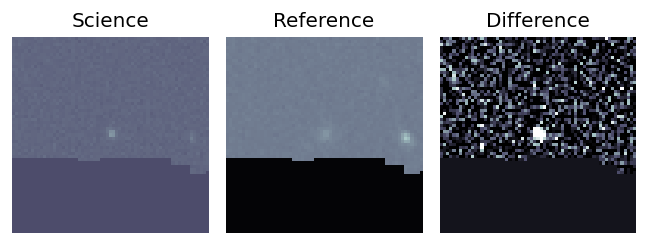
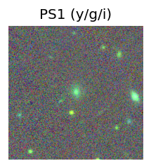
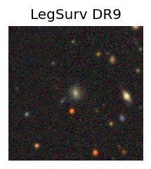
LegacySurvey: 1 sources in 3 arcsec Closest: d = 0.08 arcsec, 125.0 deg (east of north) photoz=0.24 (68% bounds 0.22, 0.27), type=SER peak abs mag = -21.58 (68% bounds -21.36, -21.85) 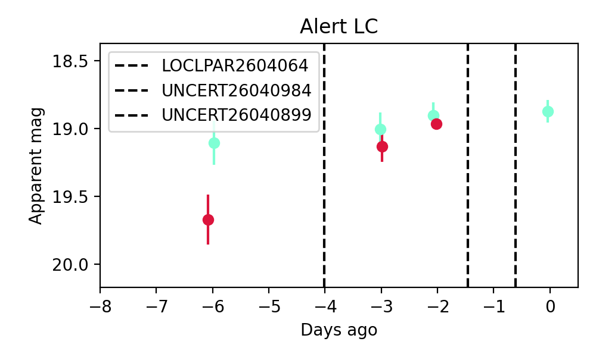
12. ZTF26aarowdc (FBOT?) [Back to Top] [Share] [Trigger Swift] [Fritz ] [Lasair ]RA, Dec: 223.92556, 31.66333 14h55m42.13s, 31d39m48.00sGalactic (l, b): 49.98602, 62.65059 ext(g-r) = 0.018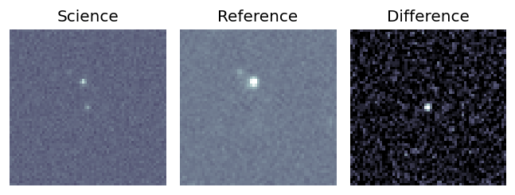
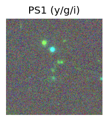
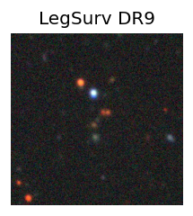
LegacySurvey: 1 sources in 3 arcsec Closest: d = 0.40 arcsec, 227.9 deg (east of north) photoz=0.82 (68% bounds 0.51, 1.51), type=PSF peak abs mag = -23.55 (68% bounds -22.3, -25.18) 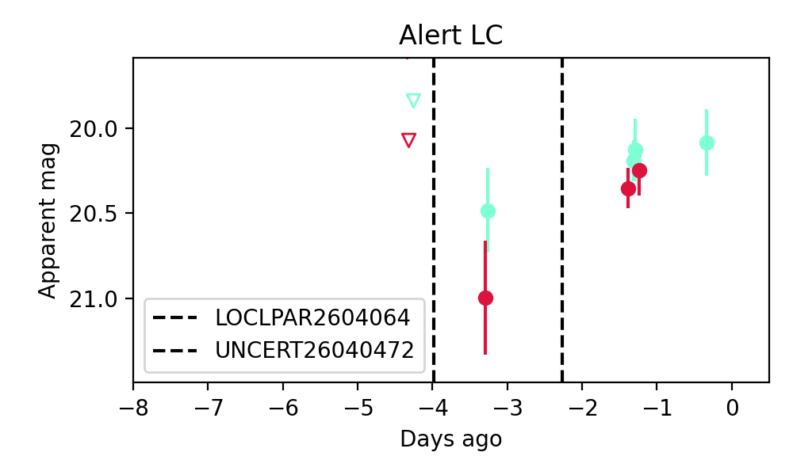
13. ZTF26aarrhqw (FBOT?) [Back to Top] [Share] [Trigger Swift] [Fritz ] [Lasair ]RA, Dec: 137.69984, 34.82645 9h10m47.96s, 34d49m35.23sGalactic (l, b): 189.32653, 42.6706 ext(g-r) = 0.023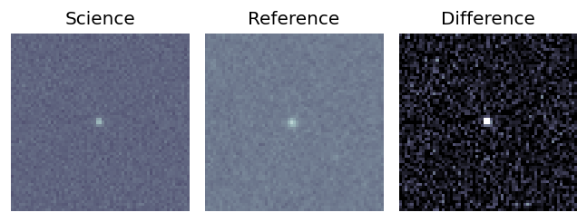
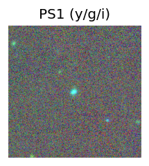
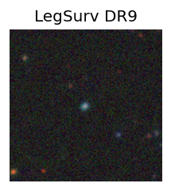
LegacySurvey: 1 sources in 3 arcsec Closest: d = 0.66 arcsec, 144.1 deg (east of north) photoz=0.17 (68% bounds 0.12, 0.2), type=EXP peak abs mag = -19.63 (68% bounds -18.83, -20.09) 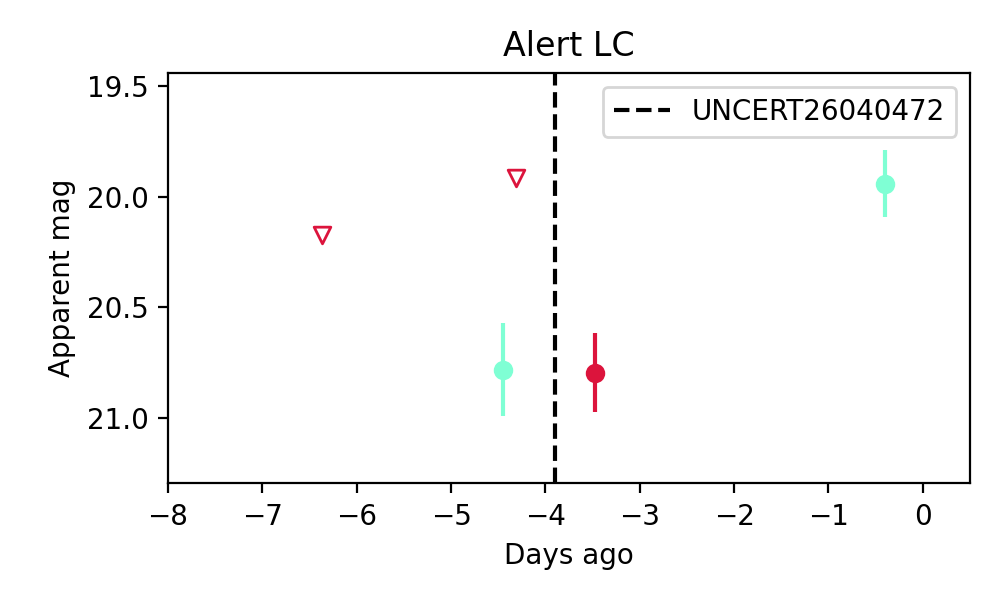
14. ZTF26aarrsvk (Afterglow?) [Back to Top] [Share] [Trigger Swift] [Fritz ] [Lasair ]RA, Dec: 133.18624, 12.57273 8h52m44.70s, 12d34m21.82sGalactic (l, b): 215.03846, 32.53838 WARNING: -4.78 deg from ecliptic plane ext(g-r) = 0.038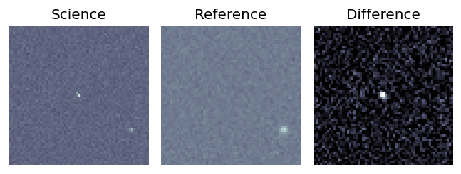
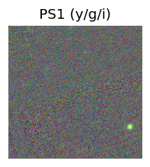
15. ZTF26aarshjo (Afterglow?) [Back to Top] [Share] [Trigger Swift] [Fritz ] [Lasair ]RA, Dec: 127.33159, 31.9469 8h29m19.58s, 31d56m48.84sGalactic (l, b): 191.02079, 33.64968 ext(g-r) = 0.049LegacySurvey: 1 sources in 3 arcsec Closest: d = 6.33 arcsec, 221.4 deg (east of north) photoz=0.89 (68% bounds 0.77, 1.04), type=PSF peak abs mag = -24.29 (68% bounds -23.89, -24.71)